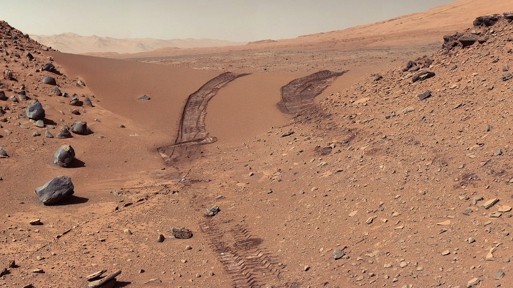

Favorite Things!!!

These are pictures of Mars, the first one, you can see
the tracks of a mars rover, I'm assuming the picture was taken by Curiosity,
which means those tracks would also be fro Curiosity. When you hover over the image
you will see how it changes to a different picture. This picture is of Martian dunes.
They're very interesting, especially since the dunes consist of black sands,
not a very common occurance on Earth.
The reason why I chose these images is because Mars is my favorite planet,
it's a cold, lifeless desert planet, yet because of this innactivity, it has
an extensive history we can study. Due to this, we know a lot about the planet,
even the fact that it once had flowing water on its surface, and may have
had life in the past.